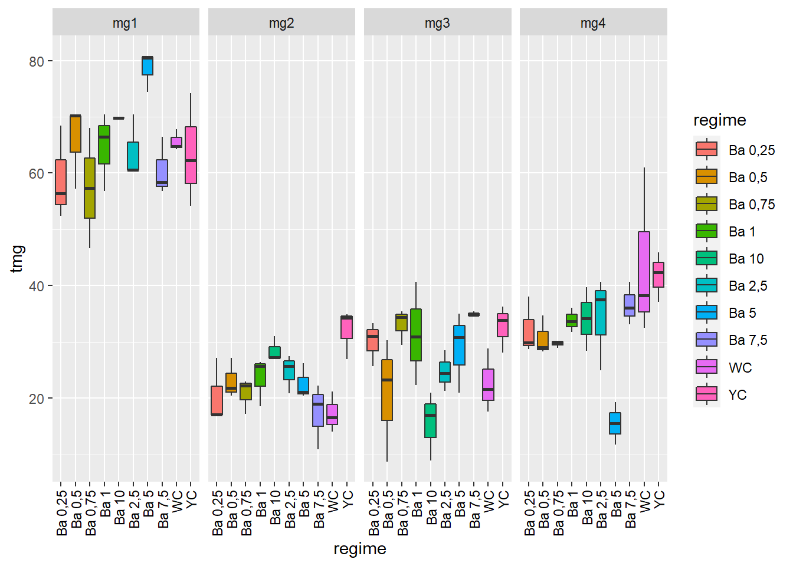
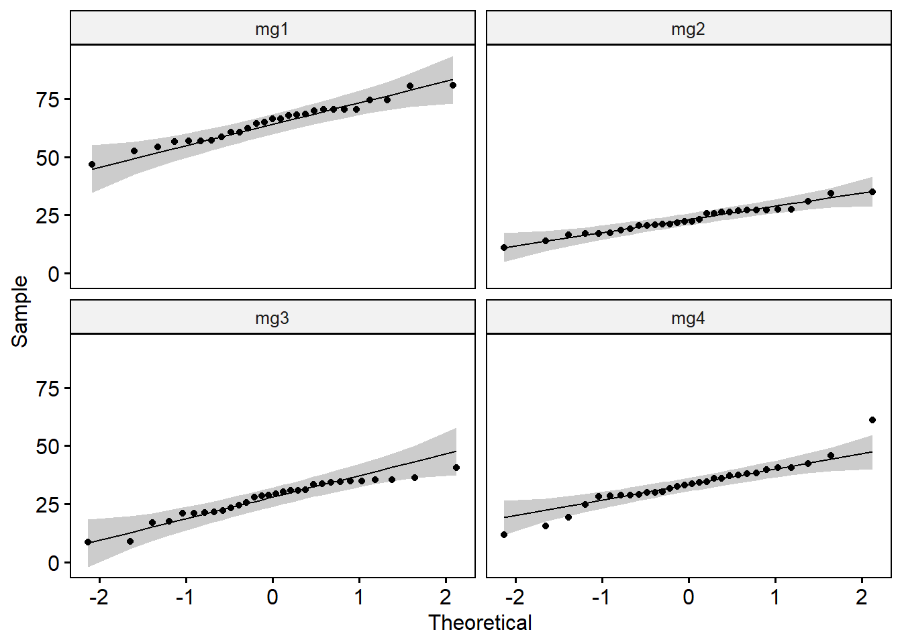
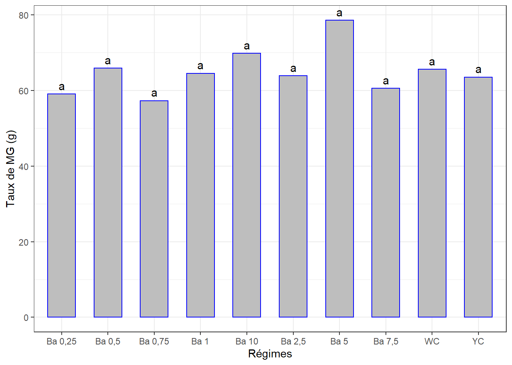
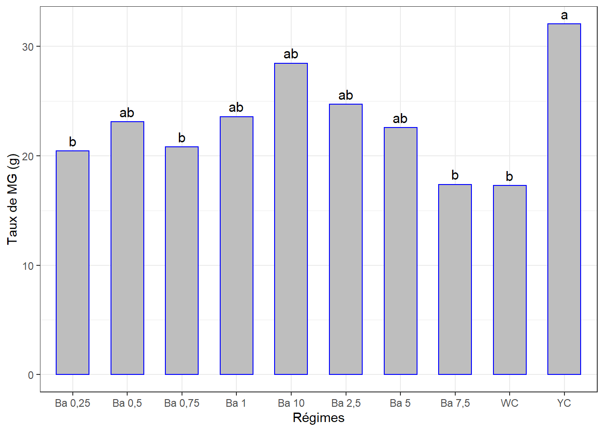
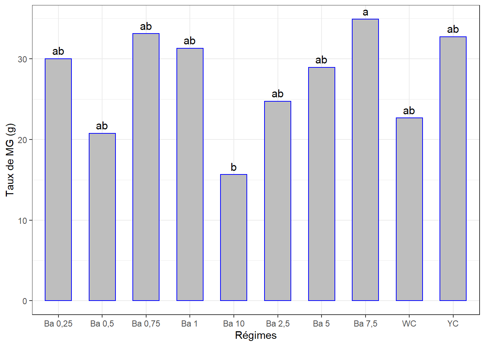
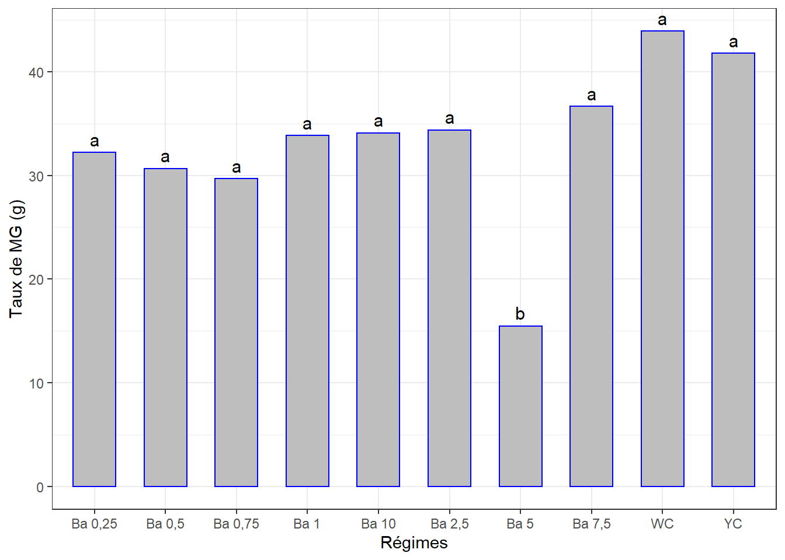
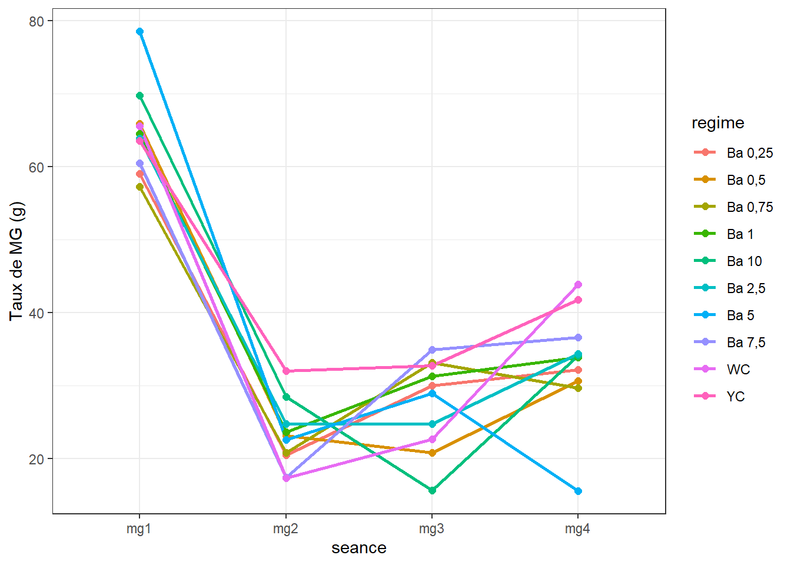
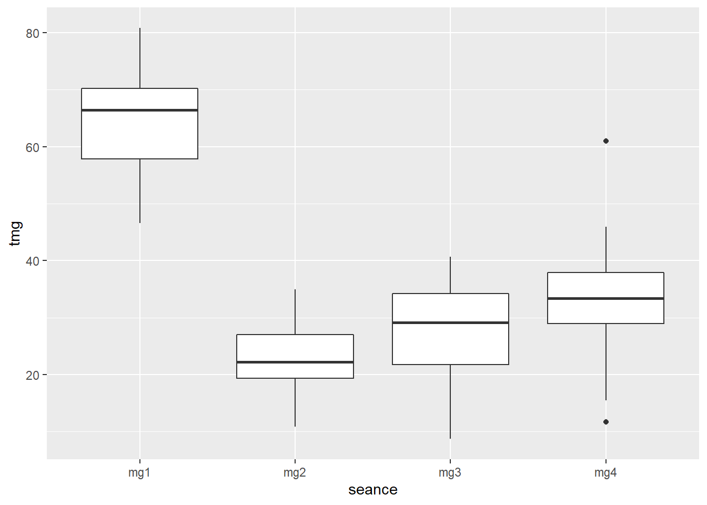
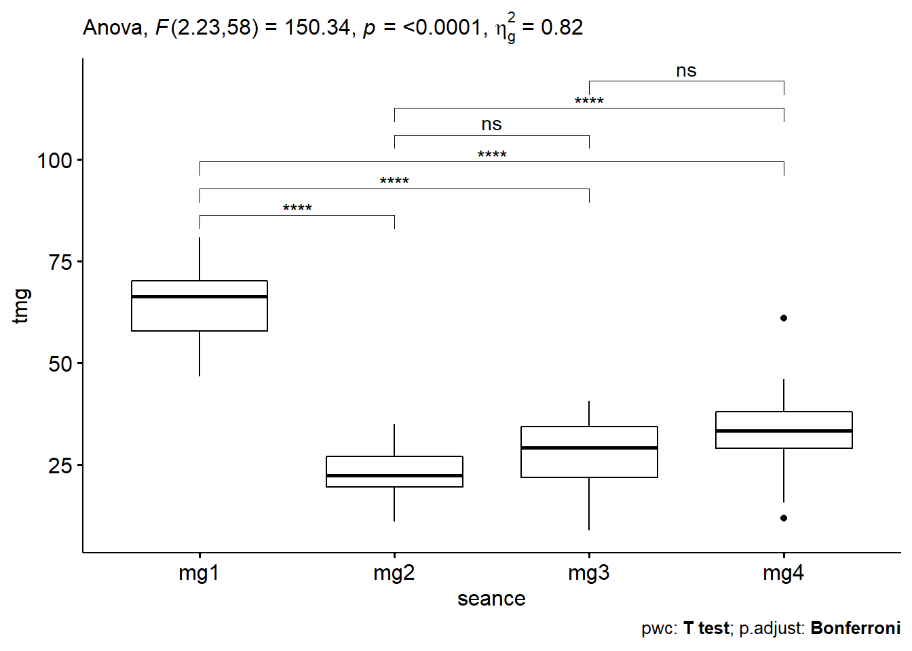

Chapitre 3 Matières grasses
Nous utiliserons le jeu de données mg.csv qui contient différentes mesures dont les taux de MG mesurés en 4 seances lors d’un essai de nutrition de cailles à base de différents regimes.
Le taux de MG de l’oeuf a été analysé en 4 séances : séance 1 (mg1), séance 2 (mg2), séance 3 (mg3), séance 4 (mg4).
La question est de savoir si les différents régimes induisent des taux de MG des oeufs significativement différents avec le temps. Mais chaque traitement n’ayant pas été appliqué sur chaque groupe d’oiseaux, l’ANOVA à mesures répétées ne pourrait pas être appliquée. Nous comparerons les effets des traitements séance par séance, puis à l’aide d’une figure on appréciera s’il y a une évolution en fonction du temps.
3.1 Les données
Rassembler les colonnes mg1 (mesure de MG de la séance 1) à mg4 (mesure de MG de la séance 4) en format long. Ajouter une colonne pour identifier les échantillons. L’identifiant (id) de chaque observation et la colonne rassemblant les anciens titres de colonnes (mg1, mg2, mg3, mg4) doivent être convertis en facteurs.
mgl <- mg %>%
mutate(id = 1:nrow(.), .before = 1) %>%
gather(key = "seance", value = "tmg", -c(regime, reference, id)) %>%
convert_as_factor(id, seance)
glimpse(mgl)## Rows: 120
## Columns: 5
## $ id <fct> 1, 2, 3, 4, 5, 6, 7, 8, 9, 10, 11, 12, 13, 14, 15, 16, 17, 1~
## $ regime <fct> "Ba 0,25", "Ba 0,25", "Ba 0,25", "Ba 0,5", "Ba 0,5", "Ba 0,5~
## $ reference <dbl> 1, 2, 3, 1, 2, 3, 1, 2, 3, 1, 2, 3, 1, 2, 3, 1, 2, 3, 1, 2, ~
## $ seance <fct> mg1, mg1, mg1, mg1, mg1, mg1, mg1, mg1, mg1, mg1, mg1, mg1, ~
## $ tmg <dbl> 56.4, 52.4, 68.4, 70.2, 70.2, 57.2, 68.0, 46.6, NA, 66.4, 56~Les valeurs pour chaque séance sont renommées en
tmgpourtaux de matière grasse.
3.2 Visualisation boxplots
bxp <- ggplot(mgl, aes(x = regime, y = tmg, fill = regime)) +
geom_boxplot() +
facet_grid(. ~ seance) +
theme(axis.text.x = element_text(angle = 90, color = "black", vjust = 0.5, hjust = 1)) #+
#theme_bw()
bxp## Warning: Removed 3 rows containing non-finite values (stat_boxplot).
On peut observer que les taux de MG mesurés à la séance 1 sont bien plus élevés que ceux des séances suivantes et qu’il y a une tendance à la hausse entre la 2 et la 3.
3.3 Détection des valeurs aberrantes extrêmes
## [1] regime seance id reference tmg is.outlier is.extreme
## <0 rows> (or 0-length row.names)=> Pas de valeurs aberrantes extrêmes pour toutes les séances.
3.4 Conditions de l’ANOVA
3.4.1 Normalité
Si les données sont normalement distribuées, la p-value de Shapiro-Wilk doit être supérieure à 0,05 pour chaque régime.
## # A tibble: 4 x 4
## seance variable statistic p
## <fct> <chr> <dbl> <dbl>
## 1 mg1 tmg 0.978 0.816
## 2 mg2 tmg 0.974 0.643
## 3 mg3 tmg 0.936 0.0695
## 4 mg4 tmg 0.939 0.0873=> Toutes les valeurs p sont > 0.05 => toutes les distributions sont normales.
NB. Si la taille de l’échantillon est supérieure à 50, le graphique de normalité QQ-plot est préféré parce qu’avec des échantillons de plus grande taille, le test de Shapiro-Wilk devient très sensible même à un écart mineur par rapport à la distribution normale.
Le graphique QQ-plot dessine la corrélation entre une donnée définie et la distribution normale. Ce n’est pas le cas ici mais je le fais quand même.
Créer des QQ-plots pour chaque point par séance

Tous les points se situent approximativement le long de la ligne de référence => nous pouvons supposer une normalité.
3.4.2 Homogénéité des variances
=> homoscédasticité ou homogénéité des variances par séance
## # A tibble: 4 x 5
## seance df1 df2 statistic p
## <fct> <int> <int> <dbl> <dbl>
## 1 mg1 9 17 0.735 0.673
## 2 mg2 9 20 0.124 0.999
## 3 mg3 9 20 0.773 0.642
## 4 mg4 9 20 0.782 0.635=> Toutes les valeurs p sont > 0.05 => toutes les variances sont homogènes.
Les conditions de la validité d’une ANOVA étant remplies, les interprétations seront donc valides.
3.5 ANOVA à 1 facteur séance par séance
3.5.1 Séance 1
3.5.1.1 Le modèle
## Anova Table (Type II tests)
##
## Response: mg1
## Sum Sq Df F value Pr(>F)
## regime 872.25 9 1.7694 0.1487
## Residuals 931.15 17La p-value > 0.05 => Pas de différence entre les effets des différents régimes sur le taux de matières grasses à la séance 1.
3.5.1.2 Comparaisons par paires
Comparaisons des moyennes par paires, Student - Newman - Keuls.
cm1 <- (SNK.test(lm1, "regime", group = TRUE))$groups %>%
mutate(regime = rownames(.)) %>%
select(regime, mg1, groups) %>%
as_tibble()
cm1## # A tibble: 10 x 3
## regime mg1 groups
## <chr> <dbl> <chr>
## 1 Ba 5 78.6 a
## 2 Ba 10 69.8 a
## 3 Ba 0,5 65.9 a
## 4 WC 65.6 a
## 5 Ba 1 64.5 a
## 6 Ba 2,5 63.9 a
## 7 YC 63.5 a
## 8 Ba 7,5 60.5 a
## 9 Ba 0,25 59.1 a
## 10 Ba 0,75 57.3 a3.5.1.3 Visualisation des groupes, bareplots avec labels
Figure pas nécessaire.
ggplot(data = cm1, mapping = aes(x = regime, y = mg1)) +
geom_bar(stat = "identity", color = "blue", fill = "grey", width = 0.6) +
geom_text(aes(label = groups), vjust = -0.5, size = 4) +
xlab("Régimes") + ylab("Taux de MG (g)") +
theme(axis.text.x = element_text(angle = 45, color = "black", vjust = 1, hjust = 1)) +
theme_bw()
3.5.2 Séance 2
3.5.2.1 Le modèle
## Anova Table (Type II tests)
##
## Response: mg2
## Sum Sq Df F value Pr(>F)
## regime 571.67 9 3.7804 0.006354 **
## Residuals 336.05 20
## ---
## Signif. codes: 0 '***' 0.001 '**' 0.01 '*' 0.05 '.' 0.1 ' ' 1La p-value est < 0.01 => Différence très significative entre les effetes d’au moins 2 régimes.
3.5.2.2 Comparaisons par paires
cm2 <- (SNK.test(lm2, "regime", group = TRUE))$groups %>%
mutate(regime = rownames(.)) %>%
select(regime, mg2, groups) %>%
as_tibble()
cm2## # A tibble: 10 x 3
## regime mg2 groups
## <chr> <dbl> <chr>
## 1 YC 32.0 a
## 2 Ba 10 28.4 ab
## 3 Ba 2,5 24.7 ab
## 4 Ba 1 23.6 ab
## 5 Ba 0,5 23.1 ab
## 6 Ba 5 22.6 ab
## 7 Ba 0,75 20.8 b
## 8 Ba 0,25 20.4 b
## 9 Ba 7,5 17.4 b
## 10 WC 17.3 b3.5.2.3 Visualisation des groupes
ggplot(data = cm2, mapping = aes(x = regime, y = mg2)) +
geom_bar(stat = "identity", color = "blue", fill = "grey", width = 0.6) +
#ylim(0, 2) +
geom_text(aes(label = groups), vjust = -0.5, size = 4) +
xlab("Régimes") + ylab("Taux de MG (g)") +
theme(axis.text.x = element_text(angle = 45, color = "black", vjust = 1, hjust = 1)) +
theme_bw()
3.5.3 Séance 3
3.5.3.1 Le modèle
## Anova Table (Type II tests)
##
## Response: mg3
## Sum Sq Df F value Pr(>F)
## regime 1060.25 9 3.0669 0.01766 *
## Residuals 768.24 20
## ---
## Signif. codes: 0 '***' 0.001 '**' 0.01 '*' 0.05 '.' 0.1 ' ' 1La p-value < 0.05 => Différence significative entre les effets d’au moins 2 régimes.
3.5.3.2 Comparaisons par paires
cm3 <- (SNK.test(lm3, "regime", group = TRUE))$groups %>%
mutate(regime = rownames(.)) %>%
select(regime, mg3, groups) %>%
as_tibble()
cm3## # A tibble: 10 x 3
## regime mg3 groups
## <chr> <dbl> <chr>
## 1 Ba 7,5 34.9 a
## 2 Ba 0,75 33.1 ab
## 3 YC 32.7 ab
## 4 Ba 1 31.3 ab
## 5 Ba 0,25 30 ab
## 6 Ba 5 28.9 ab
## 7 Ba 2,5 24.7 ab
## 8 WC 22.7 ab
## 9 Ba 0,5 20.8 ab
## 10 Ba 10 15.6 b3.5.3.3 Visualisation des groupes
ggplot(data = cm3, mapping = aes(x = regime, y = mg3)) +
geom_bar(stat = "identity", color = "blue", fill = "grey", width = 0.6) +
geom_text(aes(label = groups), vjust = -0.5, size = 4) +
xlab("Régimes") + ylab("Taux de MG (g)") +
theme(axis.text.x = element_text(angle = 45, color = "black", vjust = 1, hjust = 1)) +
theme_bw()
3.5.4 Séance 4
3.5.4.1 Le modèle
## Anova Table (Type II tests)
##
## Response: mg4
## Sum Sq Df F value Pr(>F)
## regime 1606.17 9 4.2406 0.00343 **
## Residuals 841.68 20
## ---
## Signif. codes: 0 '***' 0.001 '**' 0.01 '*' 0.05 '.' 0.1 ' ' 1La p-value < 0.01 => différence très significative entre les effetes d’au moins 2 régimes.
3.5.4.2 Comparaisons par paires, séance 4
cm4 <- (SNK.test(lm4, "regime", group = TRUE))$groups %>%
mutate(regime = rownames(.)) %>%
select(regime, mg4, groups) %>%
as_tibble()
cm4## # A tibble: 10 x 3
## regime mg4 groups
## <chr> <dbl> <chr>
## 1 WC 43.9 a
## 2 YC 41.8 a
## 3 Ba 7,5 36.6 a
## 4 Ba 2,5 34.4 a
## 5 Ba 10 34.1 a
## 6 Ba 1 33.8 a
## 7 Ba 0,25 32.2 a
## 8 Ba 0,5 30.7 a
## 9 Ba 0,75 29.7 a
## 10 Ba 5 15.5 b3.5.4.3 Visualisation des groupes
ggplot(data = cm4, mapping = aes(x = regime, y = mg4)) +
geom_bar(stat = "identity", color = "blue", fill = "grey", width = 0.6) +
geom_text(aes(label = groups), vjust = -0.5, size = 4) +
xlab("Régimes") + ylab("Taux de MG (g)") +
theme(axis.text.x = element_text(angle = 45, color = "black", vjust = 1, hjust = 1)) +
theme_bw()
3.6 Évolution du taux de matière grasse par régime au cours du temps
3.6.1 Sommaire
## Warning in qt(conf.interval/2 + 0.5, datac$N - 1): production de NaN## seance regime N tmg sd se ci
## 1 mg1 Ba 0,25 3 59.06667 8.3266640 4.8074017 20.684580
## 2 mg1 Ba 0,5 3 65.86667 7.5055535 4.3333333 18.644828
## 3 mg1 Ba 0,75 2 57.30000 15.1320851 10.7000000 135.956391
## 4 mg1 Ba 1 3 64.53333 6.9895160 4.0353989 17.362920
## 5 mg1 Ba 10 1 69.80000 NA NA NaN
## 6 mg1 Ba 2,5 3 63.86667 5.6580326 3.2666667 14.055332
## 7 mg1 Ba 5 3 78.56667 3.6115555 2.0851326 8.971601
## 8 mg1 Ba 7,5 3 60.53333 5.1432804 2.9694743 12.776617
## 9 mg1 WC 3 65.60000 1.9287302 1.1135529 4.791231
## 10 mg1 YC 3 63.53333 10.0664459 5.8118653 25.006438
## 11 mg2 Ba 0,25 3 20.43333 5.7735027 3.3333333 14.342176
## 12 mg2 Ba 0,5 3 23.10000 3.5341194 2.0404248 8.779239
## 13 mg2 Ba 0,75 3 20.80000 3.1432467 1.8147543 7.808258
## 14 mg2 Ba 1 3 23.56667 4.3154760 2.4915412 10.720237
## 15 mg2 Ba 10 3 28.43333 2.2278540 1.2862521 5.534296
## 16 mg2 Ba 2,5 3 24.70000 3.4117444 1.9697716 8.475243
## 17 mg2 Ba 5 3 22.56667 3.1659648 1.8278706 7.864693
## 18 mg2 Ba 7,5 3 17.36667 5.8243741 3.3627039 14.468547
## 19 mg2 WC 3 17.26667 3.6460024 2.1050205 9.057172
## 20 mg2 YC 3 32.03333 4.4557079 2.5725042 11.068592
## 21 mg3 Ba 0,25 3 30.00000 3.8974351 2.2501852 9.681765
## 22 mg3 Ba 0,5 3 20.76667 11.0205868 6.3627388 27.376655
## 23 mg3 Ba 0,75 3 33.10000 3.1575307 1.8230012 7.843741
## 24 mg3 Ba 1 3 31.30000 9.2065194 5.3153865 22.870262
## 25 mg3 Ba 10 3 15.63333 6.1646844 3.5591822 15.313925
## 26 mg3 Ba 2,5 3 24.73333 3.6115555 2.0851326 8.971601
## 27 mg3 Ba 5 3 28.93333 7.1842420 4.1478241 17.846647
## 28 mg3 Ba 7,5 3 34.90000 0.4582576 0.2645751 1.138375
## 29 mg3 WC 3 22.66667 5.6756791 3.2768549 14.099169
## 30 mg3 YC 3 32.73333 4.2027769 2.4264744 10.440276
## 31 mg4 Ba 0,25 3 32.20000 5.0586559 2.9206164 12.566398
## 32 mg4 Ba 0,5 3 30.66667 3.5104606 2.0267653 8.720467
## 33 mg4 Ba 0,75 3 29.66667 0.6806859 0.3929942 1.690918
## 34 mg4 Ba 1 3 33.83333 2.1594752 1.2467736 5.364434
## 35 mg4 Ba 10 3 34.10000 5.6506637 3.2624122 14.037027
## 36 mg4 Ba 2,5 3 34.36667 8.3530434 4.8226318 20.750110
## 37 mg4 Ba 5 3 15.50000 3.8000000 2.1939310 9.439723
## 38 mg4 Ba 7,5 3 36.63333 3.8279673 2.2100779 9.509198
## 39 mg4 WC 3 43.90000 15.0807825 8.7068938 37.462740
## 40 mg4 YC 3 41.76667 4.4241760 2.5542992 10.9902623.6.2 Visualisation
ggplot(mgl_ic, aes(x = seance, y = tmg, colour = regime, group = regime)) +
geom_line(size = 1) +
geom_point(size = 2) +
ylab("Taux de MG (g)") +
theme_bw()
Nous savons par les analyses pour chaque séance plus haut, que
- séance 1 : pas de différences signicatives entre les effets des régimes sur le taux de MG
- séance 2 : il existe des différences
- séance 3 : il existe des différences
Puisque les données ne répondent pas aux conditions pour évaluer les effets des régimes au cours du temps, on négligera l’effet des régimes pour évaluer globalement l’effet du temps sur les taux des MG.
On pourrait grosso-modo se demander si les taux de MG des oeufs mesurés sur l’ensemble des sujets sont significativement différents d’une séance à l’autre (c’est-à-dire avec le temps).
3.6.3 Effet du temps
3.6.3.1 boxplots, facteur temps
## Warning: Removed 3 rows containing non-finite values (stat_boxplot).
3.6.3.2 Valeurs aberrantes, facteur temps
## # A tibble: 2 x 7
## seance id regime reference tmg is.outlier is.extreme
## <fct> <fct> <fct> <dbl> <dbl> <lgl> <lgl>
## 1 mg4 17 Ba 5 2 11.7 TRUE FALSE
## 2 mg4 29 WC 2 61 TRUE FALSEIl n’y a pas d’observation aberrante extrême.
3.6.3.3 Homogénéité des variances et ANOVA, facteur temps
Les autres conditions ont déjà été vérifiées. La fonction anova_test() réalise également le test de sphéricité de Mauchly. Données utilisées.
lm <- anova_test(data = mgl,
dv = tmg, # dependant variable, num
wid = id, # identificateur de cas/échantillon (facteur)
within = seance) # facteur de groupement intra-sujets
get_anova_table(lm)## ANOVA Table (type III tests)
##
## Effect DFn DFd F p p<.05 ges
## 1 seance 2.23 58 150.342 1.19e-24 * 0.821=> C’est la p-value qui nous intéresse et elle est < 0.000 => Différence statistiquement très significative entre au moins 2 séances.
3.6.3.4 Comparaisons par paires, facteur temps
tph <- mgl %>%
pairwise_t_test(tmg ~ seance,
paired = TRUE,
p.adjust.method = "bonferroni")
tph %>%
select(group1, group2, p, p.adj, p.adj.signif)## # A tibble: 6 x 5
## group1 group2 p p.adj p.adj.signif
## <chr> <chr> <dbl> <dbl> <chr>
## 1 mg1 mg2 8.4 e-19 5.04e-18 ****
## 2 mg1 mg3 1.98e-15 1.19e-14 ****
## 3 mg1 mg4 4.65e-11 2.79e-10 ****
## 4 mg2 mg3 2.4 e- 2 1.47e- 1 ns
## 5 mg2 mg4 6.91e- 6 4.15e- 5 ****
## 6 mg3 mg4 1.1 e- 2 6.8 e- 2 ns3.6.3.5 Boxplots avec p-values
tph <- tph %>% add_xy_position(x = "seance")
ggboxplot(mgl, x = "seance", y = "tmg") +
stat_pvalue_manual(tph) +
labs(subtitle = get_test_label(lm, detailed = TRUE),
caption = get_pwc_label(tph))
Les taux de MG sont significativement plus élevés à la séance 1 comparés à ceux des séances 2, 3 et 4. Le taux de MG a connu une baisse significative globale après la séance 1 pour ensuite amorcer une faible croissance de la 2 à la 4, le dernier étant significativement plus grand que celui de la séance 2.